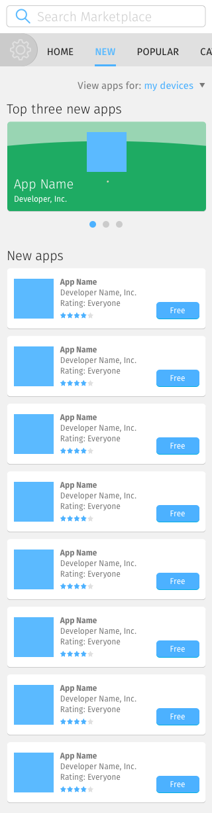
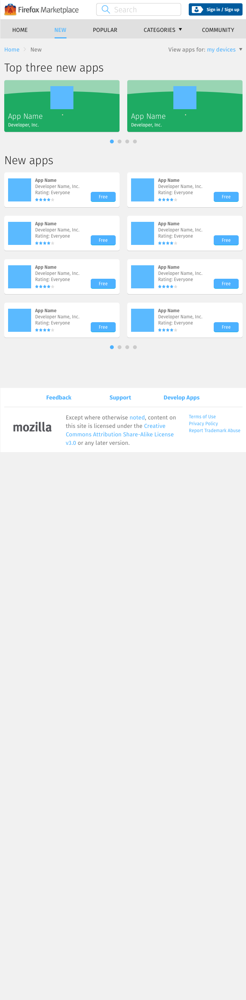
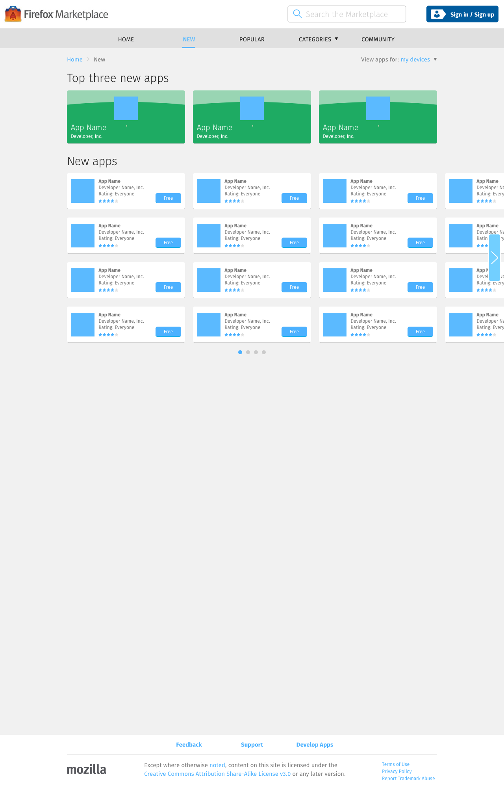

<div class="container">
	<div class="row">
		<div class="col-sm-12 col-md-12 col-lg-12">
			<h1>New</h1>
			
			<p class="longText">The newest released apps in the catalog.</p>
			
			<ol class="longText">
  			<li><strong>Quantity:</strong> 100 apps</li>
  			<li><strong>Order:</strong> Newest to oldest</li>
  			<li><strong>Size of app unit:</strong> 4 columns</li>
			</ol>
			
			<p class="longText">Amongst the newest apps, showcase 3 that are the most popular with the title “Top Three New Apps” (previous title: “New This Week”). This showcase should be placed on top of the listing.</p>
			  
		  <h3 class="specItem">Mobile</h3>
		  
		  
		  
      <p class="longText">The page displays as a vertical scrolling list.</p>
		  
		  <h3 class="specItem">Tablet</h3>
		  
		  
		  
		  <ol class="longText">
		    <li>The page displays 4 rows of app units.</li>
		    <li>Each row contains 2 app units.</li>
		    <li>Use the directional arrow – or swipe – to navigate through the app unit carousel.</li>
		    <li>Every tap of the directional arrow scrolls the app units to the next 8 in queue.</li>
		  </ol>
		  
		  <h3 class="specItem">Desktop</h3>
		  
		  
		  
		  <ol class="longText">
		    <li>Like the Tablet layout, the page displays 4 rows of app units.</li>
		    <li>However, each row contains 3 app units, with overflow space on either side.</li>
		    <li>Like the Tablet layout, use the directional arrow to navigate.</li>
		    <li>Every click of the directional arrow scrolls the app units to the next 12 in queue.</li>
		    <li>Currently displayed apps are always centered on the screen.</li>
		  </ol>
			  
		</div>
	</div>
	<!-- Pagination. If you have more than one page, set the multipage variable in the Frontmatter to true. Editing the pagination code happens in /_includes/homePagination.html.
		NOTE: This is currently broken in the Jekyll ver of this template.
		-->
		{% if page.multipage %}
			{% include homePagination.html %}
		{% endif %}
